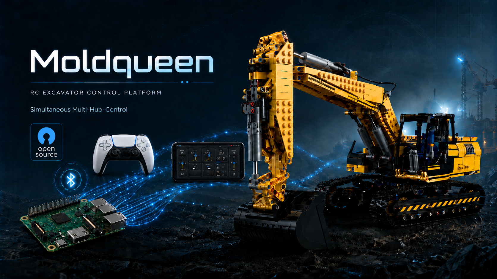

Open source · API-first
Control building-block RC toys through one clean API.
moldqueen drives Bluetooth-LE building-block machines over a documented WebSocket contract — starting with Mould King.
One smart web client. A thin-transport radio core you can swap — a Raspberry Pi today, an Android phone in your pocket, an ESP32 tomorrow. The toy never knows the difference.
Why it's different
Thin transport, smart client.
Most RC apps bake the toy into the app. moldqueen splits them: one documented contract in the middle, and either side can change independently.
API-first by design
A single, documented WebSocket contract. The radio core just carries low-level channel writes; the client owns every decision — mapping each function to a channel, inversion, travel limits, and an affirmative keepalive that stops the machine if the page goes quiet. Anything that speaks the contract — a browser, a script, an agent — can drive.
Gamepad support
Drive with a PS5 DualSense — or any browser-supported controller — on the excavator and the generic layouts. Bindings are editable, with sensible defaults, and ride the exact same drive-and-safety path as touch, down to the hardware STOP.
Run anywhere
Because the radio is just one end of the contract, you can put it where you like: a Raspberry Pi over raw Bluetooth, a standalone Android app with no Pi at all, or the client served from your desktop or Docker against a remote core. Same UI, same API, every time.
Layouts
One client, many machines.
Each toy gets a layout — a control surface over the same API. Model layouts are tuned to a specific machine; generic layouts drive any twelve-motor toy and map themselves to your hardware with a guided auto-assign. This list is pulled live from the project manifest.
Badges mirror the app: Generic vs Model, and the supported protocol. MK4 is driving today; a greyed MK6 is on the roadmap.
Get the app
Pick your radio.
Two ways to start driving. Both serve the same web UI; they differ only in where the Bluetooth radio lives.
Android — standalone app
A self-contained app: it owns the phone's Bluetooth radio, serves the UI on-device, and needs no Pi and no network. Today it's a developer build you install over USB:
# with the repo cloned and a device connected
cd android-core
./gradlew installDebug
A signed, store-ready release is on the roadmap. Latest builds and notes live on GitHub Releases.
Raspberry Pi — control core
Run the full radio core on a Pi with a Bluetooth-LE USB dongle, then open the UI from any browser on your network:
git clone https://github.com/jrichter24/moldqueen
cd moldqueen
scripts/start.sh
# then open http://<pi>:8080/
Full setup, from unboxing to driving, is in the Quickstart.
For developers
Open, documented, swappable.
The contract is the product. The radio core is a thin transport that owns the radio and a safety lifecycle; the smart client owns the channel map and resolves every function to a low-level write. Swap one without touching the other.
Want to add your own toy? A layout is just client files — a manifest entry, a thin page, and a channel map; the shared chrome (menu, settings, connect wizard, gamepad, STOP) comes for free. See Adding a layout and the rest of the developer docs. Issues and pull requests are welcome on GitHub.
Roadmap
Where it's going.
Direction, not promises. The through-line is the API-first design: each item is a new radio core behind the same contract, or a new client that speaks it.
- MK6 protocol. A second telegram codec for Mould King's per-byte MK6 hubs — this is what the greyed MK6 badges on the generic layouts are reserved for.
- ESP32 core. A small, cheap, always-on third radio core running the advertiser and the same API — no Pi or phone required.
- Camera (FPV). A first-person video feed from the machine — drive by what the toy sees, and a stream an autonomous driver could consume.
- Time-of-flight sensor. Distance and obstacle awareness as telemetry alongside the control API.
- AI brain. An agent that speaks the same WebSocket contract to drive autonomously. The thin-transport split is exactly what makes this a new client, not a rewrite.
Full detail in ROADMAP.md.
About
An independent hobby project.
moldqueen is a private, independent, open-source project for controlling Bluetooth-LE building-block RC toys. Mould King is the first supported brand; the design deliberately leaves room for others.
Disclaimer
A private, independent, unofficial hobby project — not affiliated with, authorized by, endorsed by, or sponsored by Mould King / Shenzhen Yuxing. “Mould King” and related marks are trademarks of their owners, used here only descriptively for interoperability. The protocol was reverse-engineered for interoperability with hardware the author owns, for educational and personal use.
Credits
The MouldKingCrypt cipher is ported byte-for-byte from J0EK3R/mkconnect-python (MIT, © 2024 J0EK3R), which also provided the MK4/MK6 protocol groundwork; BrickController2 was an additional protocol reference. Full attribution is in THIRD-PARTY-NOTICES.md.
How it was built
moldqueen was built with help from AI coding assistants — early work used Claude (Fable), later work used Claude Opus 4.8. All design decisions and the code review were done by the human developer.
Author
Built by Dr. Jens Richter. Background in physics and electrical engineering; by day, tour optimization with genetic and AI algorithms at DNA Evolutions. Find me on LinkedIn. Built for my son Jonas, who loves excavators and helicopters.
License
Released under the MIT License.